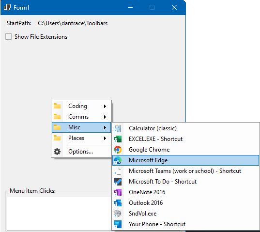

Windows Forms ContextMenuStrip for cascading browsing of folders and files.

public class FileBrowserContextMenuStrip : ContextMenuStrip
public FileBrowserContextMenuStrip()
public FileBrowserContextMenuStrip(IContainer?
components)
// components: container for disposing.
// Menu items to show after the "Options" menu item.
// Add menu items into AfterOptions to add custom menu item controls.
public ICollection<ToolStripItem> AfterOptions
{ get; }
// Title for the options dialog
public string OptionsFormTitle { get; set; }
// Persistence identifier to make multiple instances unique.
public string PersistenceId { get; set; }
// If true, show file extensions in the menu items.
[Bindable(true)]
public bool ShowFileExtensions { get; set; }
// If true, Show Shell Menu on right-click
// Shell menu provides an explorer-like menu for file actions such as copy/paste etc.
[Bindable(true)]
public bool ShowShellMenu { get; set; }
// Path to start browsing from.
[Bindable(true)]
public string? StartPath { get; set; }
// Raised when the user clicks on a file MenuItem.
public event EventHandler<FileInfo>? FileMenuItemClicked
public event PropertyChangedEventHandler? PropertyChanged